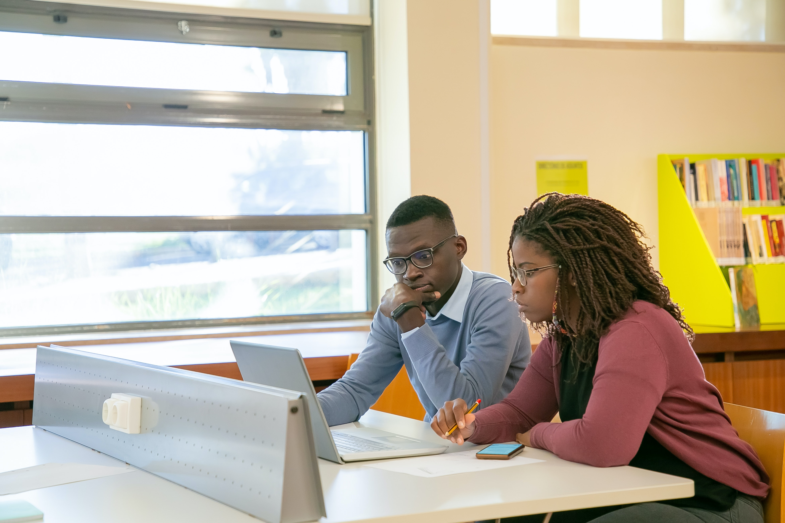

Team LAG
Aule

In una scuola al passo con i tempi tutte le aule dovrebbe possedere una LIM(Lavagna Interattiva Multimediale), ciò è già una realtà in molte scuole ma viene fortemente sottovalutata venendo spesso usata come una semplice lavagna quando potrebbe invece offrire molto di più, come la visione di filmati, esperimenti, simulazioni e rendering grafici per coadiuvare, ad esempio, l’insegnamento degli argomenti di fisica che per qualsivoglia motivo non possono essere supportati da esperienze nel laboratorio della scuola, oppure l’applicazione pratica dei teoremi della matematica, in collaborazione con il docente di informatica, ma anche filmati d’epoca e ricostruzioni grafiche per lo studio della storia, oppure ancora la visione di rappresentazioni cinematografiche o teatrali nell’ambito dello studio della letteratura, sia italiana che straniere, ed audiolibri per far sentire a proprio agio coloro che trovano difficoltà nel leggere testi scritti. Per quanto riguarda la struttura fisica delle scuole, anche se siamo coscienti che realizzare ciò sarà difficile, immaginiamo aule molto spaziose ma senza un eccessivo numero di alunni per classe, sia per questioni di comfort degli studenti stessi e dei docenti, che così potranno seguire tutti gli studenti agevolmente, che per questioni di sicurezza in caso di incendio o terremoto.
Ogni istituto dovrebbe essere inoltre dotato di una biblioteca dove gli studenti possano non solo prendere in prestito libri da leggere per diletto o sui quali approfondire gli studi, ma anche ritrovarsi per studiare, confrontarsi e svolgere la lezione insieme, o più semplicemente uno spazio dove uno studente può restare nel caso in cui non avesse la possibilità di tornare a casa e di una mensa per permettere a chi frequenta i corsi pomeridiani di non fare avanti e indietro da casa a scuola evitando quindi di penalizzare gli studenti che abitano lontano dall’istituto scolastico e sono comunque interessati a seguire i vari corsi.